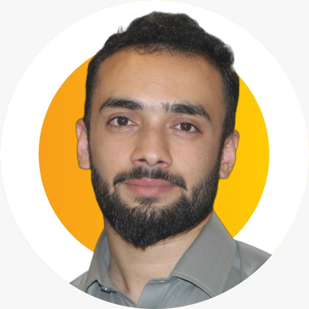

Data Scientist & AI Researcher · Peshawar, Pakistan
Research-focused Data Scientist specialising in machine learning, deep learning, NLP, and AI security. Lecturer at NUML and active researcher on cyber-resilient IoV systems and backdoor detection in neural networks.

About
Research-focused Data Scientist with deep expertise in machine learning, deep learning, NLP, and generative AI. My work spans academia and applied research across Pakistan, Norway, and Saudi Arabia.
My research focuses on AI security — particularly backdoor attacks in GNNs — cyber-resilient systems for Internet of Vehicles, and intelligent healthcare applications.
As a Lecturer at NUML and active researcher at FAST NUCES, I bridge the gap between cutting-edge research and education.
Experience
From research assistant to international consultant.
Research
7+ peer-reviewed papers across AI security, GNNs, NLP, and medical AI.
Projects
Applied AI research spanning security, healthcare, and NLP.
Deep Reinforcement Learning with Thompson Sampling and Bayesian Optimization for secure resource management in Internet of Vehicles.
Algorithms to detect and mitigate backdoor attacks in Graph Neural Networks, evaluated across diverse datasets and architectures.
Intelligent framework that anticipates and mitigates cyber threats before they impact systems using adaptive, proactive defence mechanisms.
LLM-based automation of medical report generation, fine-tuned on specialised medical datasets and validated by clinical experts. NCAI / NUST.
YOLO-based deep learning pipeline for four-class automated diagnosis from fundus imaging. Published in Nature Scientific Reports.
Encoder-decoder with attention mechanism for abstractive summarisation in Urdu — a low-resource language with complex morphological structure.
Skills
Built across years of research and applied work.
Education
Contact
Open to research collaborations, consulting engagements, and academic partnerships. Reach out via any channel below.
References